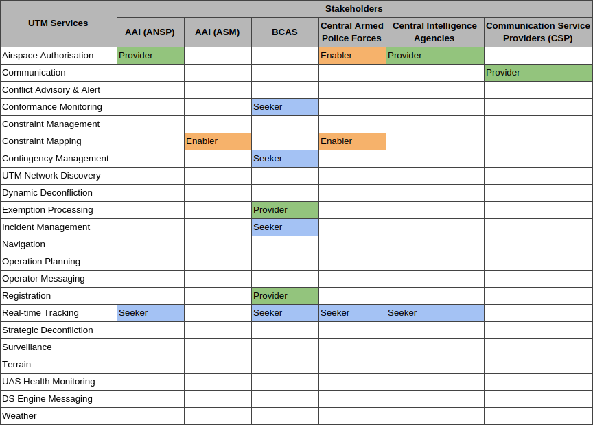
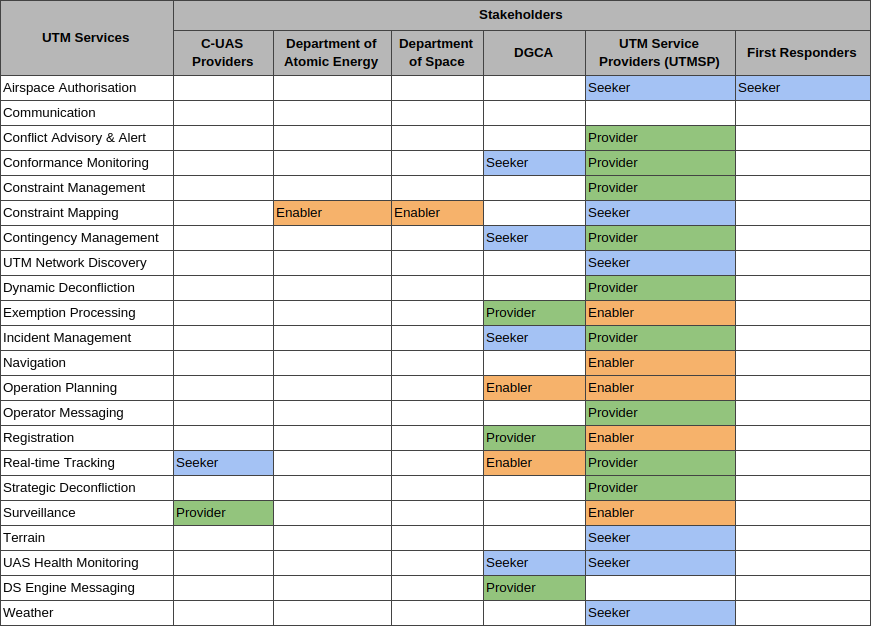
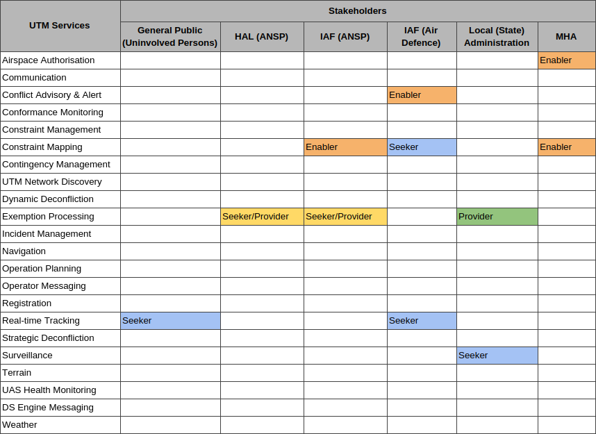
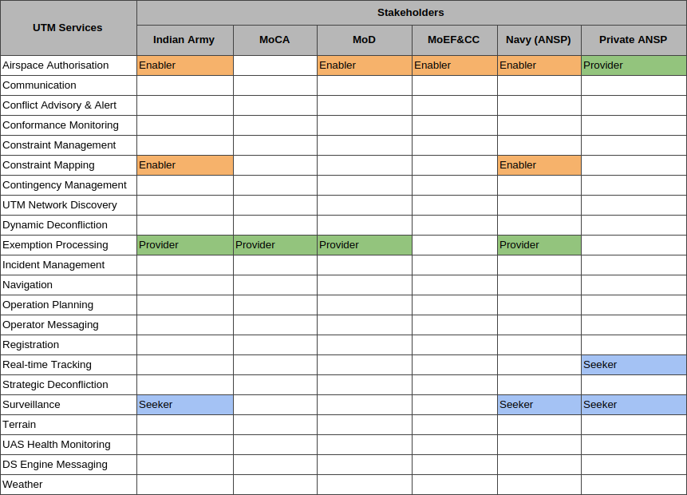
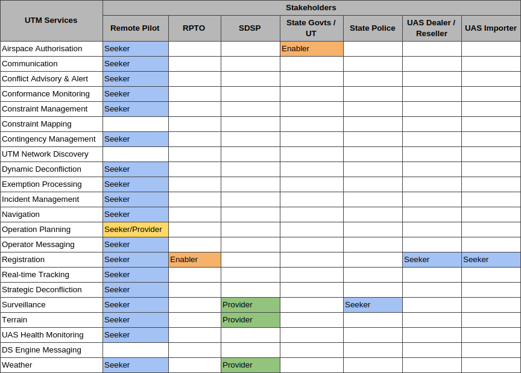
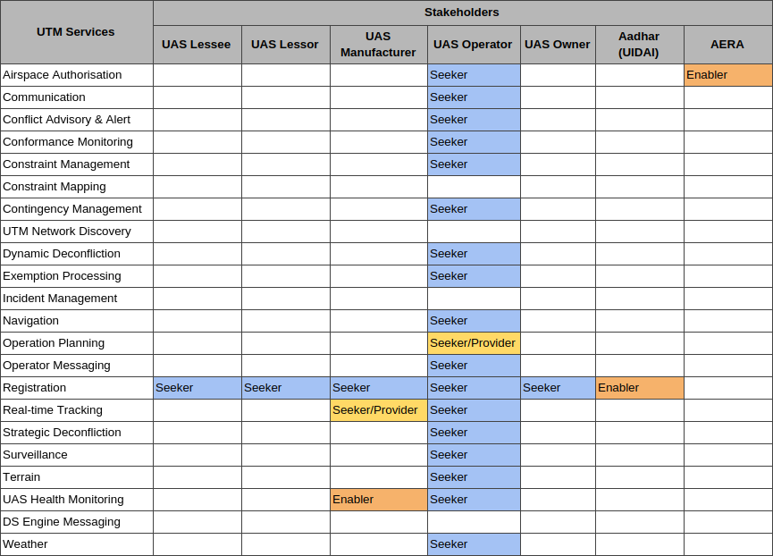
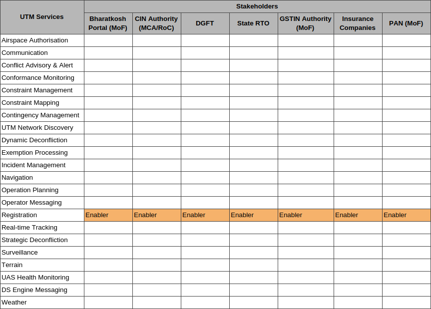
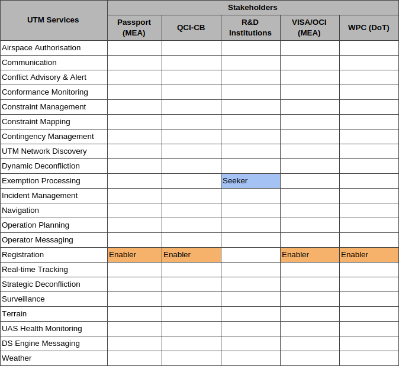

National UTM Policy Discussion Draft
Published 30 November 2020 (copied from original publication).
Outline
- National UTM Policy Discussion Draft
- INTRODUCTION
- UTM OPERATIONAL CONCEPT
- UTM STAKEHOLDERS
- UTM ARCHITECTURE
- Real-time Identification and Tracking of UAS
- UTM Data Communication, Security and Privacy
- Safety Risk Management
- UTM - ATM Integration
- UTM OPERATIONAL SCENARIOS
- Scenario 1: Flying for Testing or Recreational Purposes or in Enclosed Premises
- Scenario 2: Flying within Visual Line of Sight (VLOS) in Uncontrolled Airspace
- Scenario 3: Flying Beyond Visual Line of Sight (BVLOS) in Uncontrolled Airspace
- Scenario 4: Flying within Visual Line of Sight (VLOS) in Controlled Airspace
- Scenario 5: Flying Beyond Visual Line of Sight (BVLOS) in Controlled Airspace
- Scenario 6: Flying in No-Fly Zones
- Scenario 7: Autonomous Operations
- Scenario 8: Night Operations
- Scenario 9: Unmanned Aerial Mobility
- Scenario 10: Swarming
- Scenario 11: Payload Management
- Development of UTM Business Rules
- Introduction
- Flight Rules for Unmanned Aircraft Systems
- Airspace Classification of UTM Airspace
- Separation Standards for Unmanned Aircrafts
- Terrain & Obstacle Clearance Standards for Unmanned Aircrafts
- Minimum Distance to be Flown for Safety of Uninvolved Persons
- Minimum Distance to be Flown for Noise Abatement
- Limiting Weather Conditions for UAS Operations
- UTM DEPLOYMENT PLAN
- UTM SERVICE CHARGES
- CONCLUSION
- Appendix
INTRODUCTION
The Unmanned Aircraft (UA) industry has impacted the aviation industry by introducing technological advancements at an unprecedented pace over the last 10 years. New Unmanned Aircraft Systems (UAS) is being demonstrated across the world daily with enhanced technical capabilities to push the boundaries of the unmanned aviation industry. These technological advancements have enabled UAS to conduct various complex operations including but not limited to surveillance, surveying, spraying, mapping, inspections and deliveries, especially in the low-level airspaces. Such use cases have empowered stakeholders and businesses across different industries like Agriculture, Construction, Disaster Management, Energy, GIS, Healthcare, Insurance, Security, Mining, Oil and Gas, Telecom, etc. to improve their efficiency and deliver enhanced services. It is natural that progressively the density of UA in the airspace is going to increase. Further, as various UAS use cases evolve and the world starts looking at advanced use cases such as Unmanned Aerial Mobility, it is clear that Unmanned Aircraft (UA) will need to start flying alongside Manned Aircraft (MA). Maintaining acceptable levels of aviation safety in such scenarios would be the primary consideration for active integration of manned and unmanned aircraft in the National Airspace.
Need for UTM
Integration of UAS into the National Airspace System (NAS) presents various challenges technically and operationally. Integrating UAS operations within the current Air Traffic Management (ATM) Systems may bring in the need to equip UAs with additional hardware on-board and even qualify them to the much higher manned aviation standards, which is neither advisable nor feasible for all kinds of UAS. Further, ATM Systems may not be equipped to handle millions of UAS flights as the density of UA in the airspace increases with different UAS proving their effectiveness in various consumer, commercial and security scenarios. This scenario motivates the need for creating a separate system for the control of Unmanned Traffic and its subsequent integration with the ATM Systems, which would be complementary to the existing ATM systems UAS Traffic Management (UTM) ecosystem is hence envisioned to be an essential requirement to augment the present ATM Systems and will play a major role by providing various services to Remote Pilots and managing traffic of UAs across the designated UTM (in some cases ATM) airspaces while acting as an interface between the UAS, Remote Pilots, Regulatory Systems, ATM systems and other required systems from time to time. Since the UTM systems are primarily software-based and automate most of the UAS traffic management functions, they would enable large volumes of UA Operations while bringing in the following key benefits:
- seamless integration with the Regulatory Systems;
- the continued safety of all air traffic, both manned and unmanned within the UTM designated airspace;
- real-time situational awareness of the low-level airspace to all stakeholders;
- safety & privacy of persons on the ground;
- support complex low-level UA operations;
- ongoing support of technological advancements;
- evaluation of security and environmental risks; and
- provision for a global, harmonized framework for low-level UTM.
Scope
This policy document focuses on UAS Operations typically below 1000 feet above ground level (AGL) and addresses increasingly complex UAS operations primarily within uncontrolled (Class G) airspace (defined below) and while moving between designated controlled (Class B, C, D and E) airspace and uncontrolled airspace environments. It also introduces UA Operational scenarios that include Beyond Visual Line of Sight (BVLOS) operations in different classes of airspaces. Class G airspace is the portion of the National Airspace System that has not been designated as controlled airspace (i.e. Class B, C, D, or E). It is, therefore, designated as uncontrolled airspace. ATC has no responsibility towards providing separation services in Class G airspace; rather, Manned Aircraft cooperatively manage their operations predominantly through visual means based on specified principles and rules of operation and also through the traffic information service and alerting service provided by ATM. In order to provide UAS with the same level of airspace access as Manned Aircraft, UTM Ecosystem is designed to provide a similar means of cooperative traffic management for UAS and other participating manned aircraft in uncontrolled airspace.
Objectives
The primary objective of this policy document is to define how various UA Operational Scenarios will be enabled in the low-level airspace using the UTM Ecosystem and the Regulatory System referred to as the DigitalSky Platform. This document captures the interaction of various stakeholders with the DigitalSky Platform. This document will also further identify a vision and a roadmap for enabling future UA operational scenarios in all airspaces while addressing aviation security concerns and measures to mitigate them based on threat and risk assessments. Various concepts like the UTM Stakeholders, UTM Architecture, UTM Services, UTM-ATM Integration, Data Security and Data Privacy, which are key to the operationalisation of the UTM Ecosystem in India, are further identified in this document. This document identifies key stakeholders responsible for interacting with the UTM Ecosystem for enabling seamless UA Operations across India. The primary responsibilities of these key stakeholders, both government and private stakeholders are also identified. Further, the architecture and the flow of data exchange between various stakeholders and service providers of the UTM Ecosystem which include but are not limited to UAS, Remote Pilots, UTM systems, DigitalSky Platform, Data Provider Platforms, ANSPs, Government Stakeholders is also identified. This document also identifies the need for various interoperability standards between key stakeholders of the UTM Ecosystem. This document broadly defines the integration of the UTM Ecosystem with existing ATM systems through the DigitalSky Platform to enable more Operational Scenarios and further enhance the safety of Manned and Unmanned Aviation in India. The document also identifies a few standard UA Operational Scenarios and provides a brief explanation of how the UA Operational Scenario will be enabled within the UTM Ecosystem. Lastly, the underlying objective of this document is to enable more and more UA Operational Scenarios, increase the ease of compliance for the Unmanned Aviation Industry while ensuring the highest levels of safety and security.
UTM OPERATIONAL CONCEPT
UAS Traffic Management (UTM) Ecosystem is envisioned as a cooperatively driven and collaborative extension of the current Air Traffic Management (ATM) Services; for Unmanned Systems; in airspaces where such ATM services currently either do not exist or are not adequate to handle the expected volumes of UA traffic and level of services such aircraft demand. The UTM Ecosystem utilizes the industry’s capabilities to create, deploy and provide such services by developing software platforms under the standards published by the Regulators and will be enabled using the concept of UTM Service Providers (UTMSPs). The UTM Ecosystem in India includes a set of distributed services and an all-encompassing DigitalSky Platform and is built on a layered approach of information sharing and data exchange standards between Remote Pilot to Remote Pilot, UAS to UAS and Remote Pilot to DigitalSky Platform via UTMSPs. Such defined services are separate but are, to a fair extent, similar to ATM Services provided by the Air Traffic Services Units and are primarily based on sharing flight intent and situational awareness. These services are a key aspect of providing safe and secure UA Operations, as they support flight planning, receiving flight authorisation, real-time situational awareness, communication services, weather services, deconfliction services, amongst others.
Figure 3.1: Layered Approach of the Indian UTM Ecosystem
Remote Pilots may choose to consume such services from any UTMSP. UTMSPs integrate with the DigitalSky Platform to provide DigitalSky services and additional services to the Remote Pilots for enhancing the safety, ease of conducting UA Operations. A UTMSP will work as one of the primary interfaces for the exchange of information with the Remote Pilot while keeping DigitalSky Platform as the primary authority for flight approvals. Multiple UTMSPs and the DigitalSky Platform will work together through a coordinated effort using published Data Exchange Standards to promote safe UA Operations.
Remote Pilots can share their flight intent with each other through such coordinated effort of multiple UTMSPs to deconflict flight paths and maintain safe separation between flight paths. The UTMSPs will provide an easy to use interface for the Remote Pilots to submit information, communicate and coordinate with other Remote PIlots, Regulatory Bodies, Air Traffic Management Providers and other stakeholders using an automated and layered network of information exchange via various UTMSPs rather than direct voice communication. The UTM Ecosystem will provide different stakeholders with real-time situational awareness on a need to know basis to safely manage UAS operations in Indian airspace.
UTM STAKEHOLDERS
Identification of Stakeholders
The UTM Ecosystem is envisioned as an active collaboration between multiple stakeholders connected to each other through information sharing and data exchange standards.
Airports Authority of India (AAI)
Airports Authority of India (AAI) is the nodal authority responsible for the development, maintenance and technical operation of the DigitalSky Platform on behalf of DGCA. Its primary responsibility involves coordinating with different stakeholders for managing operations in conformance with various standards published or adopted by the DGCA. AAI achieves this by maintaining an operational environment of the National Airspace in the country. This operational environment consists of the National Airspace Map (Green, Yellow, Red Zones), flight intents of aircraft (manned and unmanned) and historic information of all flights (manned and unmanned). The National Airspace Map is maintained with active inputs from various Airspace Owners. Information about this operational environment is made available to relevant stakeholders on a need to know basis. AAI is also responsible for approving UAS flight plans in airspaces under its jurisdiction. The DigitalSky Platform connects with government agencies, security agencies, supplementary data providers (weather, terrain, etc.) and other relevant stakeholders for providing different services through the DigitalSky Platform. The DigitalSky Platform and the UTM Ecosystem assists different stakeholders by providing operational services like flight planning, flight approval, strategic and dynamic deconfliction (if required), real-time flight monitoring, etc. The Remote Pilot can connect with the DigitalSky Platform and avail such services through one of the UTMSPs.
Air Defence Authority (IAF)
Air Defence Units of Indian Air Force are responsible for monitoring all manned and unmanned air operations in the national airspace. Their primary objective is to ensure all aircraft operations in the country are identified and correlated with the known details submitted as flight plans.
Military Authorities (IAF, Army, Navy, Coast Guard, HAL)
Military authorities normally conduct their operations within segregated military airspaces. For segregation of such airspaces, the military authorities will be creating permanent or temporary flight restrictions through the DigitalSky Platform. They will also be responsible to allow exemptions for such UA operations which may be required to be conducted within their airspaces.
BCAS
The BCAS is the regulatory authority for Civil Aviation Security in India. BCAS is responsible for laying down Aviation Security Standards for implementing AVSEC measures and monitoring the implementation of these security rules and regulations. The BCAS achieves this by notifying the Security Program for RPAS and providing AVSEC training to various stakeholders of the UAS ecosystem.
DGCA
The DGCA is the regulatory authority responsible for setting up various standards and operating procedures related to manned and unmanned aviation in India and owns the DigitalSky Platform being developed by AAI under the aegis of the Ministry of Civil Aviation, Government of India. The DGCA achieves this by defining airworthiness requirements, equipment requirements and operational requirements for UAS in India. These requirements are different depending upon the weight category of the UAS, the intended use cases and the intended area of operations. DGCA is also responsible for setting up the certification standards for validating conformance to such airworthiness and equipment requirements and provides the Certificate of Compliance to such UAS that are compliant under the scheme. The DGCA is responsible for approving the registration of UAS, other stakeholders of the UAS Ecosystem and processing of special exemption requests through the DigitalSky Platform.
Remote Pilot
The remote pilot is the primary person responsible for the safe conduct of each UA flight. The remote pilot uses one of the UTMSPs for exchange of necessary information with the DigitalSky Platform. The remote pilot adheres to all the operational requirements of the airspace in which the UA is flying including conformance to the approved flight path, avoiding obstacles like terrain and buildings, avoiding flights during inappropriate weather and always giving way to manned aircraft. The remote pilot constantly monitors the flight performance and the location of the UA either directly or assisted by another person (Remote Observer) or a UTM Service Provider. In case the safety of the flight is compromised and the remote pilot notices any issues or defects during the conduct of the flight, the remote pilot intervenes immediately. The remote pilot also informs the DGCA via the UTMSP in case of any such incident.
Law Enforcement and Security Agencies
Law Enforcement and Security Agencies may require access to real-time or historic information from the DigitalSky Platform for various Security, Surveillance and Counter UAS (CUAS) purposes. Such access to information may be provided to relevant authorities as needed to protect the safety of airspace, persons or critical infrastructures like airports and other strategic installations. Such agencies may also set up various Counter UAS systems to protect sensitive areas by detecting UAS operating in such areas. These Counter-UAS systems can be interfaced with the UTM Ecosystem for identifying whether a UAS detected by the Counter UAS system is friend or foe.
General Public
The UTM Ecosystem will make data about active UA operations available to the general public via UTMSP on a need to know basis. The general public may use UTMSPs to access such data and report issues in case if they may notice a particular UAS is not flying as per recommended norms or in case a UAS is breaching their privacy.
Roles and Responsibilities
Stakeholders may perform various roles in the UTM Ecosystem. In one scenario they may be creating new information for the UTM Ecosystem whereas in another scenario they may be consuming information generated by other stakeholders. Also, a single stakeholder may perform both types of functions in different scenarios. For understanding the roles and responsibilities of individual stakeholders in-depth, each stakeholder’s actions are further classified by the role that they play while fulfilling or consuming various UTM services. This is classified as Service Seeker, Service Provider or Service Enabler
Service Seeker
A stakeholder is identified as a Service Seeker, when a particular stakeholder is seeking authorisation and/or information from another stakeholder of the UTM Ecosystem or from the DigitalSky Platform itself either directly or through a UTMSP, for performing any function related to UAS Operations. Eg. Remote Pilots are identified as a ‘Service Seeker’ when they seek authorization for flight operations.
Service Provider
A stakeholder is identified as a Service Provider when a particular stakeholder provides authorisation and/or information to another stakeholder of the UTM Ecosystem for performing any function related to UAS Operations. Eg. DGCA is identified as a ‘Service Provider’ when it is providing authorisation for registering UAS on the DigitalSky Platform.
Service Enabler
A stakeholder is identified as a Service Enabler when a particular stakeholder is assisting another stakeholder for providing authorisation and/or information to a stakeholder of the UTM Ecosystem for performing any function related to UAS Operations. Eg. The Ministry of Environment, Forest and Climate Change is identified as a ‘Service Enabler’ by providing additional airspace constraints near ecologically sensitive areas. Please refer to Appendix 1 for a complete list of roles and responsibilities of stakeholders.
Relationship Matrix
Appendix 2 defines the relationship between two stakeholders for each service and further clarifies the accountability of each stakeholder. The relationship matrix identifies the Service Seeker, Service Provider and Service Enabler (if any) for each UTM Service.
Role of Government and Private Entities in UTM Service
The role of government and various government organizations in the UTM Ecosystem is more of regulatory intervention and oversight rather than a full-fledged partnership. Government stakeholders act as an enabler to support the UAS Operations in India. The Indian airspace will be opened up for competent and qualified individuals or organizations to provide UTM services by registering themselves as UTM Service Providers as per the UTM Deployment Plan stated in the subsequent chapter of this document. Such stakeholders may be publicly owned, privately owned or be based on a Public-Private Partnership Model. For any of the models, the regulatory control will still be with the Government, with adequate powers vested on various regulators under the central government. However, to ensure the UTM services on PAN-India basis, DigitalSky Platform would also act as a UTM Service Provider for whole India airspace. DigitalSky would operate as a PAN-India UTMSP and would provide all the necessary services for UA Operations. Additionally, the DigitalSky platform would always be responsible for providing airspace mapping, approval, authorisation and other related services to various regulators and government authorities. It would also act as the single hub of all registry, flight information, constraint management, flight data management and discovery & synchronization services.
UTM ARCHITECTURE
Overview
With the UTM Ecosystem in India, the DGCA and AAI continue to maintain their regulatory and operational authority for certifying UAS and managing low-level airspace and traffic operations; however such operations are not managed by the DGCA or the ATC manually. Rather they are organised, coordinated and managed by a distributed set of actors in a highly automated software-based ecosystem. Figure 5.1 represents the proposed UTM Architecture of India. The figure highlights various blocks (components of the UTM Ecosystem represented by a blue dashed box) of the proposed UTM Architecture and different stakeholders inside each block. The solid black lines connect various blocks with each other to highlight their interdependence and show the information flow between different blocks and stakeholders. This figure represents the proposed architecture of the Indian UTM Ecosystem, which may be updated in subsequent versions of this document.
The UTM Architecture creates an interface to the DigitalSky Platform via various UTM Service Providers and is primarily divided into the following components: DigitalSky Platform, UTM Service Providers, UAS Supplementary Service Providers, UAS and Remote Pilots, Government Stakeholders and General Public. Each component provides specific user interfaces and APIs for stakeholders to interact with the UTM Ecosystem and perform their primary functions while ensuring the safety and security aspects related to UAS Operations in India.
UTM Architecture Components
DigitalSky Platform
The DigitalSky Platform is central to India’s UAS Ecosystem. It creates an automated, seamless and centralized regulatory environment for stakeholders to collaborate in real-time. DigitalSky Platform would also be providing the UTM services for the PAN-India airspace. One of the primary functions of the DigitalSky Platform is to act as a seamless and automated communication channel between the UAS industry, regulators and other government stakeholders to perform various functions related to UAS Operations. The DGCA can issue registrations and permits like Registration of a UAS, issuance of a Remote Pilot License, Issuance of Operator Permit, etc automatically through the DigitalSky Platform. Airspace owners can use the DigitalSky Platform to define or modify airspace constraints such as creating temporary or permanent flight restrictions or cancelling any planned/approved operation in case of any emergency. Supplementary data such as weather, terrain, real-time flight paths of manned aircraft can be integrated into the DigitalSky Platform to enhance safety while approving UAS Operations. The DigitalSky Platform further becomes the central data archive for all flight permissions and flight logs. Security agencies and other relevant stakeholders can interface with the DigitalSky Platform to have complete, real-time, situational awareness for all UAS operations in India.
Figure 5.2: DigitalSky Platform
As explained in Figure 5.1 and further enhanced in Figure 5.2, the DigitalSky Platform is divided into 3 components: DigitalSky Engine, DigitalSky Government User Interface and DigitalSky UTMSP. The DigitalSky Engine is the primary engine which is responsible for managing different databases, implementation of business rules and integration with various third party services and platforms. This engine is the core of India’s UAS Ecosystem. The DigitalSky Engine also interfaces with the various UTMSPs via APIs to assist the UTMSPs in augmenting the functionality of the DigitalSky Platform. The DigitalSky Government User Interface is that component of the DigitalSky which provides various regulators and administrators like Airspace Owners, DGCA, central and state government departments, Security Agencies an interface to perform various functions under their purview. The DigitalSky Government is a component of the DigitalSky Platform which is built on the DigitalSky Engine to cater to the needs of the regulators and administrators like Airspace Owners, DGCA, central and state government departments, Security Agencies. The last component of the DigitalSky Platform is the DigitalSky UTMSP. As discussed earlier, the DigitalSky Platform will continue to remain a Pan-India UTMSP while providing all the list of services required for conducting safe UA Operations. With such a scenario, government stakeholders would be able to interact with the UTM Ecosystem of India via the DigitalSky UTMSP. This DigitalSky UTMSP will also be directly accessible via the DigitalSky Government User Interface. However, the DigitalSky UTMSP would also be available to non-government stakeholders for the various services for enabling the UA Operations. The DigitalSky UTMSP and other UTMSPs are envisaged to provide similar services for enabling UA operations.
No Permission No Takeoff (NPNT) & Permission Artefacts
Digital Sky enables a proactive approach to enforcement of safety and security guidelines by ensuring that a UAS does not take-off without a signed (and encrypted) digital permission known as the Permission Artefact (PA). This Permission Artefact is issued for each UAS Operation and includes 4 dimensional (x,y,z,t) authorization information about each operation. This is essentially called the No-Permission No Takeoff (NPNT) model. The NPNT model is at the core of the Indian UTM Ecosystem and provides an additional layer of safety and security by defining the area of UA operation within the Permission Artefact. Also, the mandatory implementation of risk mitigation features like Return to Home in case of a breach of the area of operation as specified in the permission, makes sure that the DigitalSky Platform has complete knowledge about the possible position of all UAS even without tracking their real-time telemetry. Certainly, tracking real-time telemetry of the UA will be required for advanced use cases where the density of UA is more or if the area of UA operation is sensitive. Remote Pilots will be seeking flight approvals from the DigitalSky Platform through a UTMSP. The UTMSPs may provide Remote Pilots with pre-flight functionalities like Weather data, Terrain data, Strategic Deconfliction with other approved UAS flights etc. However, the responsibility of approving the UAS flight plan and issuing the Permission Artefact would always remain with the DigitalSky Platform. Additional data fields may be added in the Permission Artefact to identify the UTMSP used for seeking the flight permission. Further, the standard defining the Permission Artefact may be modified from time to time as per the requirements of the UTM Ecosystem.
UTM Service Providers (UTMSP)
The UTM Service Provider (UTMSP) is an integral part of the UTM Ecosystem. It acts as the primary interface between the industry stakeholders of the UAS Ecosystem and the Regulators. A UTMSP is expected to develop technical and operational capabilities for augmenting the functionalities of the DigitalSky Platform. UTMSPs will host the technical infrastructure and provide services to manufacturers, importers, traders, operators and remote pilots. The primary responsibility of the UTMSP would be to provide UTM services to Remote Pilots and share essential information across the UTM Ecosystem to relevant stakeholders for maintaining safety and situational awareness across the UTM Airspace. A UTMSP acts as a real-time or near real-time communication bridge between other UTMSPs, Remote Pilots, DGCA, AAI, DigitalSky Platform and other relevant stakeholders from time to time. It helps remote pilots seek authorisation and communicate safety-critical information to relevant stakeholders automatically and efficiently. The UTMSP acts as the single point which aggregates different types of information such as flight intents, real-time telemetry, weather data, etc and communicates it with relevant stakeholders as required. UTMSPs shall share all the information with the DigitalSky Platform whenever requested. It helps the remote pilots meet various UTM requirements that may be necessary for compliance during their participation in the UTM airspace. In addition to the basic regulatory functionalities, the UTMSP may create certain industry-specific niche functionalities that may be valuable additions to the UAS industry. The UTMSP provides such functionalities to the Remote Pilots through UTM services. Such services support registration, flight planning, dynamic deconfliction, conformance monitoring and other safety-related services. All UTMSPs share data with each other for complete airspace transparency and enhancing the safety of UAS Operations. For eg. UTMSP A will share flight intent and real-time flight information of all UAS to UTMSP B in case UTMSP B also has flights intents or active flights in the same airspace, via Inter-UTM Communication. Another such example could be the DigitalSky Platform notifying all UTMSPs about new temporary airspace restrictions that may be created on-demand. Such information exchange will happen between trusted parties over secure protocols over the internet and will use a Discovery and Synchronisation Service hosted by the DigitalSky Platform. This will ensure coordinated and cooperative airspace management by different UTMSPs. Such Inter-UTM Communication may be offered as a third-party service offered by one or more selected, qualified service providers. Further, each UTMSP may also employ suitably qualified and authorised UTM Personnel with an appropriate background in Aviation and/or Information Technology to supervise and manage the UTM Operations. Such personnel are not envisaged to get involved in the general operations of the UTM system but may take actions to manage special and/or emergency situations. As shown in Figure 5.1, the UTMSP sits at the centre of the UTM Ecosystem and connects with all other blocks of the UTM architecture.
UAS Supplementary Data Service Providers
Remote pilots may connect with Supplementary Data Service Providers (SDSP) independently or preferably via the UTMSP to consume data such as navigation data, airspace surveillance data, weather data, terrain and obstacle data to further enhance the safety of their flight operations. Remote Pilots may consume such data only from service providers who conform to minimum accuracy standards as laid out by the Regulator and will be authorized by the respective regulatory authorities. Such data will be exchanged between trusted parties over secure communication protocols over the internet. Regulators may mandate minimum accuracy or other standards for certain supplementary data from time to time.
UAS and Remote Pilots
All remote pilots are required to participate in the UTM Ecosystem while they are in the designated UTM Airspace. The level of participation, number and type of services required may vary depending upon the operational scenario and the location of the flight. Eg. Remote pilots may not continuously speak to the ATC for all types of flights.
Government Stakeholders
Government stakeholders in the UTM ecosystem include the safety regulator (DGCA), the security regulator (BCAS), the civil ANSP (AAI), the military ANSPs (IAF, Navy, HAL), Air Defence authority (IAF-AD), airspace owners (Ministries, Organisations, Authorities, State Governments, etc). Government stakeholders form the core group for UA flight management processes. Each government stakeholder has some role to ensure that UA operations are safe and secure to all involved and uninvolved stakeholders. They create the business rules, manage the constraints in the form of permanent and temporary flight restrictions and ensure conformance to the rules and regulations. Government stakeholders access the UTM system through DigitalSky Government User Interface.
General Public (Uninvolved Persons)
The UTM Ecosystem will make data about active UA operations available to the general public via UTMSP on a need to know basis. The general public may use UTMSPs to access such data and report issues in case if they may notice a particular UAS is not flying as per recommended norms or in case a UAS is breaching their privacy. This data can be made available to the General Public, over a secure internet connection, by implementing Identification and location tracking standards for UAS.
UTM Participation
Manned and Unmanned Aircraft Pilots are required to participate in the UTM Ecosystem depending upon the nature of the flight operations. Participation in the UTM Ecosystem may be active or passive, depending upon the UA type and Flight Operation. Active participation is required for operational scenarios which involve higher risks. This document further identifies high-risk operational scenarios where active participation may be mandatory and low-risk operational scenarios where such participation may be voluntary.
Active and Passive Participation
Active Participation: Manned and Unmanned Aircraft Pilots make their flight intent available to all other pilots participating in the UTM airspace. Furthermore, pilots also share real-time telemetry available to all other pilots participating in the UTM airspace via UTMSPs. Such participation ensures that flights with active participation can be tracked in real-time, fostering complete situational awareness for all participants. Passive participation: During passive participation, pilots (both manned and unmanned) are required to share their flight intent only. Such pilots may not share their telemetry in real-time. They can utilize information provided by the UTMSPs (flight intent and real-time telemetry of other pilots) to gain situational awareness of nearby operations and plan their activities.
Mandatory and Voluntary Participation
Depending upon the UA type and operational scenario, participation in the UTM Ecosystem may be mandatory or voluntary.
Active Participation in UTM Service in the airspace concerned shall be mandatory for:
- All UAS operations except for Nano UA below 50 ft. Above Ground Level (AGL) operating in uncontrolled airspace, Non-Detachable Tethered UAS and any UAS operating in enclosed premises; and
- Unmanned Aerial Mobility operations.
Passive Participation in UTM Service in the airspace concerned shall be mandatory to:
- Heavy Unmanned Free Balloons; and
- Model aircraft operations above 100 ft. AGL if flown outside designated flying areas.
Passive Participation in UTM Service in the airspace concerned is voluntary but recommended for:
- Nano UA below 50 ft. AGL operating in uncontrolled Airspace;
- Model aircraft operations at or below 100 ft. AGL flying outside published model aircraft flying areas;
- Small and Medium Unmanned Free Balloons; and
- Other flying objects such as Gliders, Hang-gliders, Paragliders, Paramotors, Manned (Hot Air) Balloons, Tethered Balloons, Non-Detachable Tethered UAS, Airships and Gyroplanes.
Active Participation or Passive Participation in UTM Service in the airspace concerned is voluntary but strongly recommended for all manned aircraft operations in the concerned UTM airspace and near ATM-UTM boundaries.
UTM Services
UTM services support the functionalities of the UTM Ecosystem by enabling communication and data exchange between multiple stakeholders in a modular approach. Such services also used to connect UTMSPs with each other to support various functionalities necessary for safe UA operations. UTM Services are grouped into various categories as follows:
DigitalSky Engine Services
Primary DigitalSky Engine Services are as mentioned below:
Airspace Authorisation
All remote pilots conducting UA operations are required to obtain airspace approval (4-dimensional permission artefact) from various airspace owners as mandated by the competent authority. This service helps the Remote Pilot connect with the relevant Regulator / Airspace Owner / Air Navigation Service Provider for obtaining the specified authorisation digitally.
Constraint Mapping
A digital map with appropriate constraints/restrictions needs to be maintained for facilitating seamless flight authorisation to various remote pilots. This service enables mapping of airspace constraints (e.g., airspace restrictions, special use airspace, NOTAMs, UVRs) and ground & operational constraints (e.g., public gatherings, sensitive areas, obstacles) necessary to meet the safety and mission needs of UAS operations and support in-flight and planning-related services.
Exemption Processing
In case of special operations like flying in red zones, flying special UAS, etc. the remote pilot may need to apply for exemptions from various provisions of the law. The exemption processing service supports flight planning and authorisation of UAS operations for such special or non-standard UAS operational scenarios requiring special certification and/or authorization. Such requests for exemption would be routed to the appropriate agencies through the DigitalSky Platform and permission artefact(s) would be generated after the approval of the appropriate agencies.
Registration
All stakeholders of the UTM Ecosystem like UAS Owners, Operators, Remote Pilots, Manufacturers, Traders, Importers and other stakeholders need to be registered for identification and consumption of various UTM services. Registration service provides the ability for these stakeholders to register data related to their area of activity and query functionality to allow appropriate stakeholders to request registration data.
DigitalSky Engine Messaging
Stakeholders of the UTM ecosystem generate data at multiple sources and require comprehensive communication capabilities to synchronize such information between each other. DigitalSky Engine Messaging service provides on-demand, periodic, or event-driven message exchange capabilities with DigitalSky Engine and other stakeholders for exchange of information and to satisfy applicable regulatory / policy requirements.
UTM Services
Primary UTM Services are as mentioned below:
Strategic Deconfliction
Strategic deconfliction services ensure that UA operations can be conducted in a safe manner while maintaining safe separation. Strategic deconfliction service arranges, negotiates, and prioritizes intended operation volumes/trajectories of UAS operations in the pre-flight stage with the objective of minimizing the likelihood of airborne conflicts between operations.
Dynamic Deconfliction
Dynamic deconfliction service provides real-time modifications to intended operation volumes/trajectories to minimize the likelihood of airborne conflicts and maximize the likelihood of conforming to airspace restrictions and maintaining mission objectives. This service arranges, negotiates, and prioritizes inflight operation volumes/trajectories of UAS operations while the UAS is aloft.
Conformance Monitoring
Conformance monitoring service provides the remote pilot with information to maintain conformance with its intended area of operation, or real-time alerting of imminent or actual non-conformance of the UA operation to the remote pilot, another airspace user or any other relevant stakeholder.
Conflict Advisory & Alert
Conflict Advisory & Alert service assists the remote pilot to avoid any conflict during the UAS Operation by providing a visual and/or audible alert and suggestive and/or directive information including, but not limited to, weather, terrain, obstacle, manned & unmanned aircraft proximity. This service also provides stakeholders with other relevant alerts as generated by the UTM system from time to time.
Constraint Management
Constraint Management service supports the provision of operational constraint information related to public safety activities, as well as applicable constraint information from the Regulator / Airspace Authority / ANSP and other authorized sources, to UAS Operators through UTMSPs.
Contingency Management
Contingency Management service provides assistance for participating in manned and unmanned aircraft in contingency situations.
Real-time Tracking
Real-time Tracking service provides the real-time identification and tracking of UAS in-flight in the airspace defined.
Operator Messaging
Operator Messaging service provides on-demand, periodic, or event-driven message exchange capabilities in support of UAS Operator / Remote Pilot activities. Examples of exchanged information include position reports, intent information, and status information.
Incident Management
Incident Management service provides remote pilots and other stakeholders the ability to file an accident/incident with details which may occur during operations.
UTM Network Discovery
UTM Network Discovery Service enables authorized UTM stakeholders to discover various UTM entities, for example, relevant UTMSPs and operations within a specified geographical area. The network operates in accordance with applicable standards. Each UTMSP’s access to the network will be qualified against the performance requirements necessary to be connected with the DigitalSky Engine portion of the network.
UAS Supplementary Data Service Provider (SDSP) Services
Primary Supplementary Data Service Provider (SDSP) Services are as mentioned below:
Navigation
Navigation services are a set of strategic and tactical services that provide historical quality of service performance for airspace surveying during the safety development phase, coverage maps during the flight planning phase, and real-time integrity, availability, quality of service.
Surveillance
Surveillance services provide a set of strategic and tactical services that support air risk assessment for safety case development, flight planning with airspace heat maps based on common traffic patterns, and flight operations by providing real-time tracking information of air traffic for a given geographic area. Surveillance services consist of three primary means of collecting information regarding airborne hazards: terrestrial surveillance, airborne surveillance, and satellite surveillance.
Weather Data
Weather Data services provide forecast and/or real-time weather information to support operational decisions of remote pilots and/or UTM services.
Terrain Data
Terrain Data services provide terrain information to support operational decisions of individual operators and/or UTM services.
Other Data Providers
Other data service providers providing population data, telecom network coverage data may also be involved in the UTM Ecosystem and may be listed and further identified in the subsequent versions of this document.
UAS Services
Primary UAS Services are as mentioned below:
Operation Planning
Operation Planning service supports flight planning and accounts for various operational impacts, including other known operations, aircraft performance, weather forecasts, ground constraints, airspace constraints.
Communication
Communication services provide infrastructure and quality of service assurance for radio frequency (RF) Command, Control, Communication and Telemetry (C3T) capabilities and UAS to UTM/ATM Systems to remote pilots.
UAS Health Monitoring
This service monitors the health and status of UAS system components (e.g., battery and motors) in real-time, and uses the input data to formulate predictions about the components' viability at desired time horizons.
Service Responsibility Matrix
Appendix 3 - Service Responsibility Matrix defines the UTM services that can be provided by the DigitalSky Platform and the UTMSPs. This identifies whether a particular UTM service is available with the UTMSP interface or not. Availability of the UTM service at the UTMSP level does not necessarily mean that the core responsibilities of providing the service will be the responsibility of the UTMSP. The UTMSP may act as an interface and still rely on the DigitalSky Platform to provide some of these services. Eg. A UAS Operator may seek flight authorisation using the UTMSP interface but the primary responsibility of authorising the flight still remains with the DigitalSky Platform.
Real-time Identification and Tracking of UAS
Introduction
The ability to identify and track a UAS flying in the Indian airspace will prove to be a very important capability while enabling high density, complex UAS operations. Real-time Identification and Tracking (RIT) of the UAS would enable sharing of the identity of the UAS and its location to other airspace owners and people on the ground. This would empower various stakeholders of the UTM Ecosystem by providing situational awareness about UAS. Also, RIT functionality will enable law enforcement agencies to identify and locate UAS. RIT is the functionality of a UAS to broadcast its identity and location directly in the airspace around itself through various technologies like Bluetooth/Wi-Fi or through the internet by connecting to a UTM Service Provider.
RIT via Broadcast
RIT via Broadcast is referred to as the functionality of the UAS when it transmits the identification, location and other information over Bluetooth or Wi-Fi, which can be received and displayed by a commonly carried handheld device such as a mobile phone, using a Mobile Application. This requires the UAS to advertise its identity and location over Wi-Fi and Bluetooth and would require UAS Operators / Manufacturers to integrate additional hardware to achieve the same. The operational range of such devices is expected to be less than 100 metres due to the WiFi and Bluetooth standards, which is significantly low for identifying a UAS.
RIT via Network
RIT via Network is referred to as the functionality of the UAS when it transmits the identification, location and other information over the internet to a UTM Service Provider through a RIT Network Service. In this case, stakeholders such as law enforcement agencies, airspace users and the general public connect with a UTM Service Provider to access information about active UAS flights in their area of interest using a web-based or a mobile application. Since this functionality is achieved by transmitting the identity, location and other information over the internet, it overcomes the shortcomings of the RIT via Broadcast. However, this functionality would not be available in areas with no network access.
Implementation
The section below proposes the implementation of RIT via Broadcast and RIT via Network for different types of UAS in different operating scenarios. It is recommended that India should implement RIT via Broadcast and/or RIT via Network, depending on the category of UAS and area of operation, following a risk-based approach.
The RIT message should at least contain:
- UAS ID (serial number of UAS or DAN or UIN);
- Latitude, longitude and barometric pressure altitude of Ground Control Station (GCS) and UA;
- Timestamp (in UTC);
- Intent information (magnetic heading and ground speed); and
- Emergency status of the UAS such as lost-link.
All legacy except Nano Category (in enclosed premises or flying below 50 feet in uncontrolled airspace) UAS operating in India should also be retrofitted with appropriate RIT features, as stated in this section, either integrated within the UAS or strapped-on to the UAS in a manner which cannot be easily removed. UAS not equipped with a RIT feature should be allowed to operate only in segregated airspaces established for testing of UAS as defined by the competent authority from time to time.
RIT via Broadcast Implementation
RIT via Broadcast over Wi-Fi and Bluetooth would consume additional power on-board and may cause interference for UAS operating in de-licensed frequencies, thus reducing the operational range of the UAS. As highlighted in section 6.2 the detection range for RIT via Broadcast devices using standard Wi-Fi or Bluetooth modules may be severely limited. Also, it is difficult to distinguish a UAS spoofing its identity over RIT via Broadcast without the ability to verify its identity over the network. Hence, it is recommended that studies or experiments be conducted or alternatives be proposed for a more efficient and effective alternative for RIT via Broadcast over Bluetooth or Wi-Fi before making RIT via Broadcast operational and mandatory.
RIT via Network Implementation
All UAS required to participate actively in the UTM Service should implement RIT via Network. UAS owned and operated by Law Enforcement Agencies (LEA) and First Responders such as Fire Services, Authorised Hospitals and Disaster Management Agencies shall also be required to implement the RIT via Network. Defence UAS and UAS operated by agencies such as NTRO, ARC and Intelligence agencies may, due to their confidentiality requirements, be exempted from equipping the UAS owned and operated by them with RIT via Broadcast feature. However, such UAS shall be equipped with RIT via Network. DigitalSky and UTMSPs may be suitably built to ensure that identity, flight plan information and real-time position of such UAS are masked from normal view and such details should be provided only to UTM and ATM operators on need-basis. However, defence UAS under large category may be exempted from these requirements provided such UAS is equipped with an alternate method of communicating identity and position in real-time to ATC such as ADS-B or SSR transponder.
UTM Data Communication, Security and Privacy
Data Security and Privacy
UTM Systems enabling UAS operations are being deployed across different information technology systems. These systems collect, generate, exchange and process registration, pre-flight, in-flight and post-flight data of UAS operations. In addition to ensuring the safety of operations, robust data privacy and data security mechanisms become a mandatory requirement for such UTM systems. As these UTM systems are also available over the internet, these systems are exposed to various data and network security threats. These threats have the potential to impact UAS operations, other manned and unmanned aircraft as well as involved and uninvolved people and property. In order to meet the ecosystem requirements and protect IT systems against the various threats, UTM systems would be required to follow the standards and regulations stipulated by the DGCA specifically for the aviation IT systems and general guidelines by the Government of India for data security and privacy. In general, data shall be exchanged or stored in encrypted form. TLSv1.3 or similar latest standards shall be used for the exchange of information between two systems. The UTM systems shall be compliant to ISO/IEC 27001:2013 or similar latest standards and other relevant standards from the ISO 27000 standards family. Additionally, all the software and hardware systems would be required to be hosted in India. If any system is required to be hosted on the cloud, then such cloud shall be a Ministry of Electronics and Information Technology (MeitY) empanelled cloud. It shall be ensured by the system owner that all types of data including user-provided, collected, generated, analysed and other similar data will reside in India and will not be accessed by any entity outside India. Provisions of the proposed Indian Personal Data Protection Act, as and when promulgated, shall be followed for maintaining the data privacy. Whenever any data is shared by a government agency with any non-government agency then such data shall not be shared further with any individual or entity without the permission from the government agency. Each UTM system shall provide a secure interface to DigitalSky for online sharing and auditing of the data. Competent Authority may also conduct the physical audit of the IT system to ascertain the data security and privacy compliance of UTM systems. Depending on the nature of the safety or security situation, historical or near-real-time information may be needed and can be requested by competent authorities. Operators would be required to archive certain data as per the DGCA rules and guidelines to support post-flight requests by authorized entities on a need to know basis. In future, the ICAO IATF and GRAIN standards may be evaluated for adoption.
Authentication and Network Security
As there are multiple entities providing different services in the UTM ecosystem, there is a need for a framework for identification, authentication and authorization of the entities. In this regard, a Registration Authority (RA) & Certificate Authority (CA) service would be provided by the government through the DigitalSky Platform to perform the vetting and proofing of the identities. The authorization and authentication between entities would be enabled by the DigitalSky Platform using identities issued by the RA & CA. Authorized entities will utilize network discovery services of the DigitalSky Platform to identify UTMSPs, SDSPs and other stakeholders of the UTM Ecosystem and further request and receive data commensurate with access credentials. The data exchange across the network links shall use the latest secure communication channels like TLSv1.3 for exchange of the information between the systems. In future, the ICAO IATF and GRAIN standards may be evaluated for the adoption.
Safety Risk Management
Introduction
Civil Aviation Requirements (CAR) Section 1 - General, Series C, Part I, Issue II dated 27th July 2017 provides the Regulation for Establishment of a Safety Management System (SMS) for Aviation Organisations in India. The CAR stipulates that aviation organisations including manufacturers and service providers shall develop, establish, maintain and adhere to a safety management system. The guiding principles are in synchronisation with ICAO Annex 19 and DOC 9859. This chapter describes the general procedures to be followed by organisations to conform with the regulatory (DGCA), corporate and international (ICAO) standards and recommended practices on safety management.
ICAO SMS Framework
ICAO Annex 19 contains the recommended SMS framework for aviation organisations. The framework contains four components and 12 elements to be followed for establishing and maintaining a robust safety management system in aviation organisations. Every organisation involved in the provisions of UTM Service shall develop, establish, maintain and adhere to a safety management system as per the provisions contained in the DGCA Regulations.
Hazard Identification and Risk Assessment
A hazard is defined as a condition or an object with the potential to cause injuries to personnel, damage to equipment or structures, loss of material, or reduction of ability to perform a prescribed function. The safety risk is the projected likelihood and severity of the most credible consequence or outcome from an existing hazard. Safety risk management encompasses the assessment and mitigation of safety risks. The objective of safety risk management is to assess the risks associated with identified hazards and develop and implement effective and appropriate mitigations. Hazard Identification is a continuous, ongoing and daily activity. The hazard can be reported from any source. The need for hazard identification is essential in the following conditions:
- Unexplained increase in safety-related incidents
- During major operational changes
- Significant organizational changes
Hazard identification shall be based on a combination of reactive, proactive and predictive methods of safety data collection. All identified hazards should be assigned a hazard number and recorded in a hazard log along with its consequences. Hazards may be identified through various data sources, which can be either internal or external. Some examples of internal hazard identification data sources include voluntary and mandatory reporting systems, safety surveys, safety auditing and follow-up reports on accidents/incidents. Some examples of external hazard identification data sources include state voluntary and mandatory reporting systems, state oversight audit and safety information-sharing system.
Operational Risk Assessment as a UTM Service
The categorisation of UAS accordingly to the maximum all-up weight and regulation of operation of these categories through progressively more stringent requirements from lighter to heavier UA is solely based on the energy calculation with the presumption that a lighter UA has less energy than a heavier UA during operation and thus can cause comparatively less harm to persons or property in the event of a collision. Operational risk assessment should also consider additional factors by placing such operations in the actual operating environment rather than conducting a general analysis much before the actual day of operations. It is recommended that in addition to the SMS processes UTM Service providers and other aviation organisations are mandated to follow, UTM Service Providers may conduct an operational risk assessment of every UA mission conducted through a UTM Service provider. The operational risk assessment should be specific to the category of UA and the planned mission, and should broadly follow the principles of safety management contained in ICAO Annex 19, DOC 9859 and DGCA CAR. Such a mission-specific operational risk assessment may be offered as a UTM service by the UTMSPs.
UTM - ATM Integration
Introduction
To achieve the phased objective of Segregation to Accommodation to Integration of unmanned aircraft systems into the national airspace, associated ATM and UTM systems should communicate with each other at the systems level. Operation of manned and unmanned aircraft near UTM-ATM boundary and transition of manned aircraft into UTM space or vice-versa should happen seamlessly with as less human intervention as possible. This calls for mutually interoperable UTM and ATM systems. This chapter attempts to briefly examine the requirements to set the stage for a robust UTM-ATM integration environment.
ICAO UTM Framework
ICAO document titled “Unmanned Aircraft Systems Traffic Management (UTM) – A Common Framework with Core Principles for Global Harmonization Edition 2” examines the issues related to the operation of aircraft (manned as well as unmanned) near boundaries between UTM and ATM airspace and also transition through these boundaries. ICAO suggests that: States should consider several key operational aspects while establishing boundaries between UTM-ATM areas of responsibilities. These include, inter alia:
- Identification of roles and responsibilities of UTM and ATM systems in terms of the level of service provided and service responsibility should the two overlap.
- Development of operational procedures and coordination processes:
- for transitioning between UTM and ATM;
- to allow traffic under UTM control to operate in an ATM environment and vice-versa; and
- for operations in close proximity to adjacent airspaces
- Establishing separation standards between unmanned aircraft as well as between manned aircraft and unmanned aircraft.
- Establishing the prioritization of operations (e.g. in-flight emergency or medical operations having priority over other aircraft).
Under technology considerations, ICAO further suggests that: States should consider several technological aspects while establishing boundaries between UTM and ATM areas of responsibilities. These include, inter alia:
- technology to support collision avoidance;
- automation to support traffic management and transitions between UTM to ATM;
- information exchange capabilities between UTM and ATM systems for operations planning purposes and to enable situational awareness; and
- capabilities to meet performance requirements needed to achieve interoperability (e.g. CNS requirements).
The ICAO framework document also provides guidance on essential information exchange between UTM and ATM systems. The various elements of UTM-ATM information exchange are also provided. This policy recognises the need for a robust UTM-ATM interoperability and integration policy which is globally acceptable and consistent with the seamless ATM concept. Accordingly, the requirement of information exchange between UTM and ATM systems has already been considered in the UTM architecture contained in Chapter 5. This policy supports the ICAO UTM framework and intends to align itself with the ICAO policy on UTM-ATM interoperability and integration.
UTM OPERATIONAL SCENARIOS
Scenario 1: Flying for Testing or Recreational Purposes or in Enclosed Premises
UAS and its associated components (payload, radio, etc) undergo various experimentations and may require the conduct of experimental operations. UAS manufacturers may be engaged in regular research and development activities and would need frequent flying of experimental UAS. Risks associated with flying such UAS are high as in some of the cases such operations would be conducted on UAS which are not certified as Airworthy. Also, UAS may be flown for recreational or educational purposes. This would include UAS being flown by Aeromodellers for recreational purposes or by educational institutions under various educational training programs. Educational training programs may also be conducted in enclosed premises. Usually, the risk during such operations would be low to moderate as the range of operations is limited to visual line of sight in most of such cases. As the purpose of such operations is specific and such operations can be conducted in designated areas, the UTM ecosystem may propose a framework for identification of designated sites as testing sites or recreational sites where UAS can be flown for testing or recreational purposes. In such cases, airworthiness certification may not be mandatory for all classes of UAS and the participation of such UAS, operating in the designated sites, in the UTM Ecosystem for this operational scenario may be voluntary. However, it may require compliance with other standard operating procedures as defined by the regulator from time to time.
Scenario 2: Flying within Visual Line of Sight (VLOS) in Uncontrolled Airspace
A vast variety of commercial applications like surveying, mapping, agriculture spraying, cinematography would be carried out in uncontrolled airspace. UAS operations for such use cases are limited to visual line of sight with the remote pilot always in command. Further, flying in uncontrolled airspace significantly reduces the risk of a potential conflict with manned aircraft. However, the risk posed to ground assets is not mitigated. Such operational scenarios may mandate general airworthiness certification and requirement of standard equipment on board the UAS for participation in the UTM ecosystem.
Scenario 3: Flying Beyond Visual Line of Sight (BVLOS) in Uncontrolled Airspace
Capabilities of Scenario 2 will be expanded to accommodate large scale applications like large scale surveying and mapping, long-range surveillance, linear asset inspection, etc. The volume of such UAS operations would also be high. In this scenario, the remote pilot would be in command of the UAS or would be able to at least take control of the UAS whenever
required. Flying in uncontrolled airspace would again reduce the risk of a potential conflict with manned aircraft. However, the risk to ground assets and uninvolved persons would still be high as the remote pilot in command would only be able to observe the position of the UAS via a combination of various sensors and a remote screen. Such operational scenarios may mandate a higher level of airworthiness certification in combination with additional onboard equipment pertinent for safe BVLOS operations and for participation in the UTM ecosystem.
Scenario 4: Flying within Visual Line of Sight (VLOS) in Controlled Airspace
Airspaces over major metro cities fall in the controlled airspace and here are huge requirements of conducting UAS Operations for multiple use cases. Airworthiness requirements for this scenario may be similar to Scenario 1 with additional CNS equipment requirements for ATM systems.
Scenario 5: Flying Beyond Visual Line of Sight (BVLOS) in Controlled Airspace
Scenario 4 may be extended for use cases like pipeline monitoring, power line inspection, etc for BVLOS operations in controlled airspace. Airworthiness requirements for this scenario may be similar to Scenario 2 with additional CNS equipment requirements for ATM systems.
Scenario 6: Flying in No-Fly Zones
Flying over strategic installations like government administration buildings, defence installations, police and paramilitary installations, reserve forests, industrial assets of national significance may pose additional risk. In such operational scenarios, additional clearances from a safety, security and environmental perspective may be prescribed by the regulator.
Scenario 7: Autonomous Operations
Autonomous operations help manage complex use cases like patrolling around sensitive areas, long-range deliveries, regular inspections of assets. Such use cases may require special airworthiness certification with a focus on higher reliability of the UAS, sophisticated Detect and Avoid systems and redundancy of flight-critical components. Filing of flight path and flight intent prior to the operation may be mandated by the regulator. Further, the regulator may mandate Bi-Modal control capabilities on the UAS for taking over control and command of the Autonomous UAS in case of emergencies.
Scenario 8: Night Operations
The ability to operate at night is a crucial requirement for applications such as security and surveillance, emergency response. UAS with flight critical subsystems dependent on daylight may not be permitted for night operations. If the remote pilot uses visual reference or camera feed, in daylight, for control or navigation of the UAS, then such UAS may also not be permitted for night operations. Additional security and environment-related operating conditions may be mandated by the regulator.
Scenario 9: Unmanned Aerial Mobility
Unmanned Aerial Mobility may follow conventional airworthiness standards of manned aircraft with additional equipment and operational requirements, some of which are as suggested below:
- pre-flight safety video
- real-time tracking
- two-way communication capabilities with the passenger(s) for contingencies
- alarm system to alert passengers and uninvolved persons in case of contingencies
- flight path information for the passenger
Scenario 10: Swarming
UAS swarms may help increase the efficiency of conventional UAS operations like search and rescue operations. However, depending on the nature of swarm operations they may pose different complexities. Different ways of blocking airspace, identification of each UAS and the swarm as a whole, bimodal communication with each UAS and the swarm as a whole, submission of flight logs, etc maybe some of these. Due to the complexity of this operational scenario, it may be further defined in subsequent versions of this document.
Scenario 11: Payload Management
Certain UAS operations like logistics UAS, spraying UAS or fuel-powered UAS may involve discharging of payloads in flight or consumption of fuel during operations. The maximum takeoff weight of the UAS will vary in such operational conditions. In addition, many UAS are designed to carry a variety of payloads with different weights. This may present the need to certify airworthiness for a range of maximum takeoff weights and different payload configurations. Further, the UAS, in any case, may not exceed its maximum takeoff weight and the characteristics of the payloads being carried by the UAS should be pre-approved. Additional considerations should be made for clearing airspace when a payload is dropped or discharged from a UAS.
Development of UTM Business Rules
Introduction
Provision of UTM service shall be based on common business rules applicable to UTM Service Providers. Such business rules are required to ensure safety and security of UA operations conducted through UTMSPs and also to ensure safety and security of uninvolved persons and property, thereby reducing the risk of collateral damage to an acceptable level. This chapter identifies the requirement of defining the business rules in a few minimum areas, which should be followed by UTMSPs while providing UTM Service. However, the technical business rules required to ensure compliance with the technical standards set by the regulator are not considered in this chapter.
Flight Rules for Unmanned Aircraft Systems
The existing Flight Rules of the Air, i.e. Visual Flight Rules (VFR) and Instrument Flight Rules (IFR) were coined for manned aircraft, with the presumption that a pilot is controlling the moving aircraft. However, in the case of unmanned aircraft, the pilot is outside the aircraft and in case of autonomous flights, would not even be controlling the flight. Thus, the existing flight rules may not be suitable for unmanned aircraft operations. It is recommended that the flight rules for unmanned aircraft may be different (say UFR), wherein the rules of the air become more suitable for unmanned aircraft (See and Avoid is replaced by Sense and Avoid or Detect and Avoid, etc.).
Airspace Classification of UTM Airspace
The existing classification of airspace as Controlled and Uncontrolled airspace can lead to jurisdictional and functional confusion among ATM and UTM Service Providers. Provision of UTM Service in ATM airspace (even Class G airspace which is uncontrolled is an ATM airspace now) by UTMSPs could be construed as an issue of overlapping responsibilities. The conditions laid out for compliance by aircraft operators and by ATM / UTM Service Providers in existing classes of airspace (Classes A to G) may not be suitable for UAS operations. It is recommended that airspaces identified for provision of UTM service may have a different classification (say U-Airspace), where all participating manned and unmanned aircraft are required to abide by the requirements of the airspace. Operation of UA beyond the U-airspace would demand complete compliance with the requirements of the corresponding (existing) class of airspace the UA is operating in.
It would also be worth considering different sub-categories under U airspace to account for the widely varying operational and performance requirements. Thus, under U airspace, sub-categorisation such as U1, U2, U3 etc. may prevail. A typical operational and performance requirement matrix (totally presumptive) is placed as Table 10.1.
Table 11.1: Indicative Operational and Performance Requirements for U-Airspace
| Class | Type of Services | Services Provided | Speed Limitation | Participation | UTM Clearance |
|---|---|---|---|---|---|
| U1 | UFR | Separation between UFR flights | Max. IAS 50 KT | Mandatory for all Unmanned Aircraft except Model Aircraft. | Yes |
| U2 | UFR and VFR | Separation between UFR. Situation awareness for all participating flights. | Max. IAS 100 KT | Mandatory for all Unmanned Aircraft except Model Aircraft. Voluntary for manned aircraft. | Yes, for participating unmanned aircraft. Advisory for participating manned VFR flights. |
| U3 | UFR, VFR and IFR | Separation between UFR flights and between UFR flights and participating IFR flights. Situation awareness for all participating flights. | No limitation | Mandatory for all Unmanned Aircraft except Model Aircraft. Voluntary for manned aircraft. | Yes, for participating unmanned aircraft and manned IFR flights Advisory for participating manned VFR flights. |
To allow seamless and unhindered operation of UA in some portions of ATM airspaces (Classes A to G) where such operations are not a matter of concern for ATM service providers, such portions can be hived off from ATM classification and designated as temporary U airspace.
Separation Standards for Unmanned Aircrafts
The existing separation standards designed to ensure the safety of aircraft operations by keeping them horizontally and vertically apart by a fixed margin may not be suitable for unmanned aircraft owing to the extremely small size of a majority of UAs and the wide variation in their performance characteristics including cruising speeds. It is recommended that minimum horizontal and vertical separation standards between two unmanned aircraft and between a manned and unmanned aircraft may be designed. Such standards will help UTM Services providers (and ATMSPs) in providing the strategic and dynamic deconfliction service and when mandated, separation service, to participating unmanned and manned aircraft.
The existing separation standards between manned aircraft does not consider the type or weight category of aircraft involved, except in case of wake turbulence separation. However, this cannot be the case for unmanned aircraft. Due to widely varying weight and performance characteristics, it is recommended to have a series of separation standards based on weight and speed. Implementation of such separation standards would be taken care of by UTM systems and not controllers as in the case of ATM airspace, and hence having multiple separation standards would not possibly create any significant human factor issues.
Concept of Flight Bubble
One such separation standard could be called the Flight Bubble. Current tracking standards enable sharing of real-time position information of the UAS, however, there may also be an additional need for establishing a Flight Bubble for providing safe separation services between aircraft and communicating about the same to other aircraft flying nearby. The Flight Bubble can be explained using the infographic below:
The UAS shall only be able to sense each other as flight bubbles, ensuring that all flights happen with the adequate safety margins, and variances due to equipment and/or type of operation are well accounted for using algorithms. In the case of the Emergency Landing or a Failure, the data shall be exchanged between the UAS (for performance level variables & failure modes) and the UTMSP. The UTMSP shall share data about the safe landing spots available according to the flight plan. The UAS flight path may ensure that the Flight Bubble always extends to the terrain for landing in a safe spot during any emergency flight termination.
In case such safe spots are not available, and the Flight Bubble does not extend to the ground, additional mitigation measures may be considered. The concept of a flight bubble is preliminary and may undergo revisions before adoption. Further, additional separation standards may be formulated for different operational scenarios and as the density of the UA in the airspace increases.
Terrain & Obstacle Clearance Standards for Unmanned Aircrafts
Clearance from terrain and obstacles can be achieved in two ways; through Vehicle-based systems or as a UTM Service. When vehicle-based systems are used, the responsibility of avoiding collision with terrain and obstacles remain with the pilot or operator. However, when this service is provided by the UTMSP, the responsibility for providing collision avoidance service lies with the UTMSP. It is recommended that terrain and obstacle clearance standards for unmanned aircraft may be designed and published for compliance by UAS manufacturers (for vehicle-based systems) and UTM Service Providers. Considering the wide variation in the performance characteristics of unmanned aircraft systems, it is recommended to mandate a risk-based standard with the performance expectation of reducing the risk of collateral damage to an acceptable level. This means that the clearance from terrain and obstacles need not be stipulated as a static value (like 50 m from any person or 100 ft. from all buildings) but should be coined as an algorithm considering various aspects such as performance characteristics of the UA, whether remotely piloted or autonomous, prevailing weather etc., akin to the collision avoidance algorithm used in autonomous cars.
Minimum Distance to be Flown for Safety of Uninvolved Persons
Algorithm-based standards may be defined for ensuring the safety of uninvolved persons similar to the recommendations in section 10.4 above.
Minimum Distance to be Flown for Noise Abatement
Algorithm-based standards may be defined for ensuring that unmanned aircraft are operated at such distances required for ensuring compliance with environmental regulations, similar to the recommendations in section 10.4 above.
Limiting Weather Conditions for UAS Operations
UTM systems should take into account the weather restrictions imposed by the Regulator on UAS operations, with mechanisms to dynamically control the operation of participating UAs based on the real-time weather information provided by SDSPs.
UTM DEPLOYMENT PLAN
The density of UAS operations and types of UAS Operations may vary in different geographical locations. Some locations may have a high density of operations whereas other remote locations may not have any operations at all. Also, some UAS operations may be relatively complex in nature due to the technology advancement and special requirements of the business case. Thus, different airspaces may have different levels of UAS traffic management requirements and the deployment plan of UTM services in India would play a key role in effectively managing UAS operations. Three primary strategies are generally considered while planning deployment of UTM systems in any country: ‘Single UTM Per Region Strategy’, ‘Multiple UTMs Per Region Strategy’ and ‘Hybrid Strategy’.
Single UTM Per Region Strategy
This strategy allocates a particular airspace region (city/state/FIR) to a single UTM service provider. This strategy provides a relatively simple, easy to adopt the deployment model and assigns a single point of authority for traffic management per airspace region. However, the same UTM may also become a single point of failure and in case of any issues with the UTM Service, the entire airspace region would become non-serviceable. Also, since this strategy would be monopolistic in nature, it does not keep the UTM Service Provider motivated enough to provide high levels of services to the users.
Multiple UTMs Per Region Strategy
This strategy allocates single airspace (usually large) to multiple UTM Service Providers and adds the complexity of multiple UTMs to coordinate with each other using Inter-UTM communication. It ensures that a single UTM system does not become a single point of failure and establishes a healthy competition between multiple UTM Service Providers, hence ensuring higher service levels and lower fees for UTM Services. However, this model does not account for service providers wanting to operate in small segregated airspace.
Hybrid Strategy
The Hybrid deployment strategy allows multiple UTM systems to manage the same airspace to avoid a single point of failure and but also allows for smaller UTM systems running special UA operations (for eg. asset inspection, security surveillance or delivery of health packages in rural areas) to either manage the segregated airspace assigned to them or integrate with larger UTM systems running in the same airspace. This strategy allows complete flexibility for anyone to manage airspaces on their own provided they are compliant with the rules laid down by the regulator. This strategy extracts the best of both strategies proposed above, creates a best-case scenario for deploying UTMs and is the chosen UTM deployment strategy for India.
UTM SERVICE CHARGES
UTM Service Providers host technical infrastructure and partner with supplementary data service providers to provide UTM services to manufacturers, traders, importers, owners, operators, remote pilots and other stakeholders. This may involve significant cost overheads to develop and maintain critical systems as per defined standards. UTMSPs may choose to charge the user for service provided by them and may choose different pricing models for the same.
Pricing Models
The pricing models may depend on multiple factors like category and quantity of UAS, the number of remote pilots, the number of flights, etc. UTMSP may also choose to have dynamic pricing models for special parameters like the density of UAS operations in real-time, number of UTM-ATM crossovers, the risk level of operations, use of supplementary data, use of other additional non-mandatory features, etc. Some of the pricing models envisioned for the UTM Ecosystem are described below:
Subscription Model
UTMSPs may choose to bill users on a fixed weekly, monthly, quarterly or yearly fee. The UTMSP may choose to price the user based on the number of UAS, number of flights, number of remote pilots per operator or add their own custom pricing variables to define the subscription cost. In case, operators and remote pilots choose to subscribe through such a pricing model to UTMSPs not operating Pan-India, they may face difficulties in receiving UTM Services in regions where the UTMSP does not operate. In such areas, the UTMSP may integrate with other UTMSPs to provide UTM Services or may ask the operator or remote pilot to use another UTMSP on their own.
Pay Per Use Model
UTMSPs may choose to bill users on a totally dynamic basis instead of a fixed periodic fee. In this case, the UTMSP may choose to charge every user on a pay per flight basis. The UTMSP may choose to standardise rates for some parameters like price per kilometre/square kilometre or price per minute and may have dynamic rates for special parameters as mentioned in the first part of this chapter. In this pricing scenario, the operator and remote pilot would be able to choose a UTMSP during the flight planning stage. Such a pricing model may not bind the operator or remote pilot with a fixed UTMSP. The operator or remote pilot may keep switching between UTMSPs on a need or performance basis.
Subscription + Pay Per Use Model
UTMSPs may also choose to create a mixed pricing model by combining both the pricing models mentioned above. In this case, the UTMSP may have tiers of subscription models based on standard parameters like category and quantity of UAS, number or remote pilots, the number of flights, etc. and may additionally have value-added packages or rates for special parameters like high-risk operations, surge pricing in high-density flight scenarios, fees per UTM-ATM crossover, etc. Such a model may provide the right balance between subscribing for a fixed fee for most use cases and will provide pricing options to users for rare scenarios or less frequent scenarios. The pricing models mentioned above are indicative. The UTMSP may choose to implement their own pricing models in conjunction with the minimum fees and procedures laid down by the competent authorities from time to time.
Service Charges to UTMSPs
The Airports Authority of India (AAI) may charge the UTMSP, a fee, as Airspace Usage Charges. This fee would be in addition to the registration and other fees charged by the DGCA and other competent authorities during the setting up of the UTMSP. These charges, mainly Airspace Usage Charges would be charged on a per-flight basis, the pricing of which may be fixed by the AAI and/or other competent authorities based on standards and parameters as mentioned above. The overall definition of these fees may be done in such a manner that the UTMSP may share a minimal percentage of the fee charged to the user with the AAI.
CONCLUSION
This document aims to create a roadmap for enabling high density, complex operational scenarios of UAS operations in the low-level airspace in India. This document has recognised various stakeholders and their primary responsibilities for enabling such UAS Operations. This document also defines the overall architecture of the UTM Ecosystem and highlights how different stakeholders will be communicating with each other to enable such UAS operations. Further, this discussion draft would be revised after receiving public comments and the National UTM Policy would be published thereafter.
Appendix
Appendix 1: List of Stakeholders with their Roles and Responsibilities
| Stakeholder | Roles | Responsibilities |
|---|---|---|
| AAI (ANSP) | Provider | Provides approvals and clearances to UAS flights in civil Controlled Airspaces |
| Seeker | Requires data from UTM on UAS intending to operate in or near ATM airspace | |
| AAI (ASM) | Enabler | Creates/modifies permanent or temporary airspace constraints in DigitalSky Engine |
| BCAS | Provider | Approves UAS Operator Security Programme |
| Seeker | Requires access to situational awareness dashboard for areas around airports and other aviation facilities. May want to monitor a particular flight operation, its conformance, contingency. Also, need access to incident data and archived past data | |
| Central Armed Police Forces (CAPF) | Seeker | Requires access to situational awareness dashboard for areas under their jurisdiction. May want to monitor a particular flight operation |
| Intelligence Agencies | Seeker | Requires access to situational awareness dashboard for areas under their jurisdiction. May want to monitor a particular flight operation. Also, need access to past data |
| Communication Service Providers (CSP) | Provider | Provide UAS-UTM, UAS-UAS, UTM-UTM, UTM-ATM, UTM-SDSP, SDSP-UAS, SDSP-SDSP, UTM-CUAS communication service |
| CUAS Providers | Seeker | Request data about planned and live UA operations in the airspace |
| Provider | Provide data about rogue flying objects to UTM and ATM | |
| Department of Atomic Energy | Enabler | Creates/modifies permanent or temporary airspace constraints in DigitalSky Engine |
| Department of Space | Enabler | Creates/modifies permanent or temporary airspace constraints in DigitalSky Engine |
| DGCA | Enabler | Permission/license for a UAS, UTMSP, SDSP etc. Commissioning approval of a UTMSP, SDSP etc. Provides the Regulations and the guidelines, technical specifications and standards for various UTM entities, interfaces and features, builds the business rules |
| Seeker | Requires flight monitoring data logs parameters from UTM (UTMSP, SDSP, etc), UAS flight logs, occurrence reports, conformance monitoring of each UTM entity etc | |
| Provider | Provides registration services through DigitalSky Engine | |
| UTM Service Providers (UTMSP) | Seeker | Request services from DigitalSky Engine, SDSP, other UTMSPs, CSPs, Verification / Authentication, Payment Gateways etc |
| Providers | Provide UTM service to operators., security agencies, ANSPs etc | |
| Enabler | Shares situational awareness about UAs in flight. | |
| First Responders | Seeker | Request priority access to all airspaces and priority clearances from all agencies |
| General Public (Uninvolved Persons) | Seeker | Request information about details approved of UAS flying (excluding those who are exempted to participate in the UTM for flying) in a particular area violating the privacy, safety norms |
| HAL (ANSP) | Provider | Process exemption request from Operators to fly in RED / YELLOW Zones |
| Seeker | Requires data from UTM on UAS intending to operate in (exemption obtained) or near military ATM airspace | |
| IAF (ANSP) | Enabler | Creates/modifies permanent or temporary airspace constraints in DigitalSky Engine |
| Provider | Process exemption request from Operators to fly in RED / YELLOW Zones | |
| Seeker | Requires data from UTM on UAS intending to operate or fly in (exemption obtained) or especially near military ATM airspace | |
| IAF (Air Defence) | Provider | Issue Air Defence Clearance |
| Seeker | Requires access to situational awareness dashboard for entire Indian airspace | |
| Local (State) Administration | Seeker | Requires access to situational awareness dashboard for areas under their jurisdiction |
| Provider | Creates/modifies permanent or temporary airspace constraints in DigitalSky Engine. Provides approval for special operations in the zone under their jurisdiction as exemption workflow | |
| MHA | Enabler | Creates/modifies permanent or temporary airspace constraints in DigitalSky Engine |
| Provider Enabler | Provides jurisdictional data (or creates jurisdictional map) of police stations along with contact details | |
| Indian Army | Enabler | Creates/modifies permanent or temporary airspace constraints in DigitalSky Engine |
| Seeker | Requires data from UTM on UAS intending to operate in or near military airspace | |
| MoCA | Enabler | Provide policy guidelines for UTM ecosystem |
| Provider | Process exemption from provisions of Aircraft Rules | |
| MoD | Enabler | Creates/modifies permanent or temporary airspace constraints in DigitalSky Engine |
| Provider | Grants permission for aerial photography and other aerial work | |
| MoEF&CC | Enabler | Creates/modifies permanent or temporary airspace constraints in DigitalSky Engine |
| Navy (ANSP) | Enabler | Creates/modifies permanent or temporary airspace constraints in DigitalSky Engine |
| Provider | Process exemption request from Operators to fly in RED/YELLOW Zones | |
| Seeker | Requires data from UTM on UAS intending to operate in (exemption obtained) or near military ATM airspace | |
| Private ANSP | Provider | Provides approvals and clearances to UAS flights in private civil Controlled Airspaces |
| Seeker | Requires data from UTM on UAS intending to operate in or near ATM airspace | |
| Remote Pilot | Seeker | Requires full bouquet of pre-flight, inflight and post-flight UTM services |
| RPTO | Provider | Provides information and authentication services for remote pilot training |
| SDSP | Provider | Provides various supplementary data services like navigation, weather, terrain data, manned/unmanned aircraft, population, etc |
| Seeker | Requires Inter-SDSP communication and SDSP-UAS / SDSP-UTMSP communication | |
| State Governments / UT | Enabler | Creates/modifies permanent or temporary airspace constraints in DigitalSky Engine |
| Local Police Authorities | Seeker | Requires access to situational awareness dashboard in areas of interest |
| Provider | Provides approval for operations, where required | |
| UAS Dealer/Reseller | Seeker | Requests registration service through UTMSP |
| UAS Importer | Seeker | Requests registration service through UTMSP |
| UAS Lessee | Seeker | Requests registration service through UTMSP |
| UAS Lessor | Seeker | Requests registration service through UTMSP |
| UAS Manufacturer | Seeker | Requests registration service through UTMSP, obtaining NPNT CoC, ETA (WPC) |
| UAS Operator | Seeker | Requests registration service through UTMSP, issue of UAOP, UTM services from UTMSP |
| UAS Owner | Seeker | Requests registration service through UTMSP, issue of UIN |
| Aadhar (UIDAI) | Enabler | Supports authentication process |
| AERA (or a similar Authority) | Enabler | Provides policy for airspace and UTM user charges |
| Bharatkosh Portal (MoF) | Enabler | Support payment process |
| CIN Authority (MCA/RoC) | Enabler | Support authentication process |
| DGFT | Provider | Provides import license |
| Driving License (State RTO) | Enabler | Supports authentication process |
| GSTIN Authority (MoF) | Enabler | Supports authentication process |
| Insurance Companies | Providers | Provides insurance service to operators |
| PAN (MoF) | Enabler | Supports authentication process |
| Passport (MEA) | Enabler | Supports authentication process |
| QCI-CB | Provider | Provides UAS certification services |
| R&D Institutions | Seeker | Requires clearances for testing/demonstration |
| VISA/OCI (MEA) | Enabler | Supports authentication process |
| WPC (DoT) | Provider | Provides ETA |
Appendix 2: Stakeholder Relationship Matrix
       
Appendix 3: Service Responsibility Matrix
| Service Group | Service | DigitalSky | UTMSP |
|---|---|---|---|
| DigitalSky Engine Services | Airspace Authorisation | ✓ | |
| Constraint Mapping | ✓ | ||
| Exemption Processing | ✓ | ||
| Registration | ✓ | ||
| DigitalSky Engine Messaging | ✓ | ||
| UTM Service Provider (UTMSP) Services | Strategic Deconfliction | ||
| Dynamic Deconfliction | |||
| Conformance Monitoring | |||
| Conflict Advisory & Alert | |||
| Constraint Management | |||
| Contingency Management | |||
| Real-time Tracking | |||
| Operator Messaging | |||
| Incident Management | |||
| UTM Network Discovery | |||
| UAS Supplementary Data Service Provider (SDSP) Services | Navigation | ||
| Surveillance | |||
| Weather | |||
| Terrain | |||
| UAS Services | Operation Planning Communication | ||
| UAS Health Monitoring |